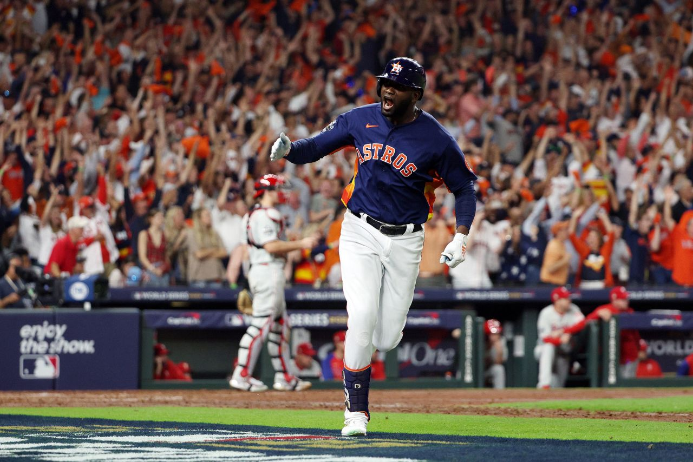

A Quick Look at the 2022 Season
The 2022 season was one to remember for the Astros Organization. They were able to produce all the highlights they needed with guys like Altuve, Alverez, and Peña. We cannot forget the veteran, Justin Verlander, that led the team to another championship during his last season. The Astros' fan base has also gotten to witness one of the best managers that has ever graced baseball, Dusty Baker. With the work of all these players together, they were able to produce a championship season for the second time in six years.

Yordan Alverez's Historic Moment
The 2022 season was full of amazing moments for the Astros. One of them being, the game six moment by the designated hitter Yordan Alverez. Alverez went up to bat in the bottom of the sixth inning. The Astros were down 1-0. With two men on base, Yordan Alverez hit a three run homerun deep to center field. That one hit placed the Astros two runs above the Phillies to make the score 3-1. The Houston Astros went on to win the world series 4-1.